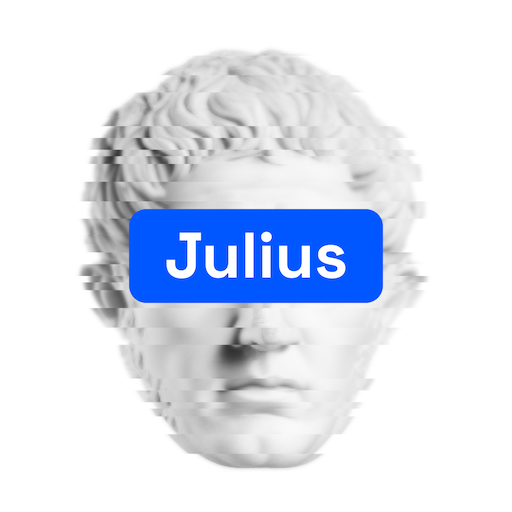

Julius and the Democratization of Coding

The world is aware that generative AI has made coders more efficient, but I don’t know if there is as much recognition of the more important fact that gen AI has made coding accessible to non-coders. I expect this to change rapidly by word of mouth: Once exposed to the wonder of coding with gen AI, one cannot help but want to share the word. We can accelerate that change for our students.
There are many IDEs (integrated development environements) that incorporate AI assistance, among which Cursor may be the most popular at the moment. Those tools are fantastic, but the variety of options makes them intimidating to non-coders. The leading chatbots also have “code interpreters” that execute generated code to respond to prompts. But, as of this writing, those interpreters are closed systems. They provide a fixed menu of libraries and do not allow the user to install more. Julius.ai bridges the gap. It is a full-fledged coding environment, allowing the user to install any library he or she wishes. At the same time, it has the ease of use of a chatbot (and get the 50% academic discount by emailing team@julius.ai from your university email).
The Julius website states that it provides an “intuitive way to analyze and visualize data without having to code, making statistical analysis accessible to everyone.” Democratizing coding is the goal of the Julius developers. However, the focus on statistical analysis understates what Julius has to offer. You can choose to work in either python or R. If you choose python, which I recommend, then you can do anything with Julius that python can do, and python can do pretty much everything. We’ll explore lots of applications in subsequent posts. I’ll refer to Julius throughout my posts, because I don’t think there is anything superior available now and because it is what I use in my course, but the things we discuss will frequently apply to other AI + python setups as well.
Julius is a wrapper around large language models (LLMs), including the latest models from OpenAI and Anthropic as of this writing. Julius sends the user’s prompts to the user’s selected LLM (the general consensus in the blogosphere, and my own impression, is that the Anthropic models Claude 3.5 and Claude 3.7 are the best coders available at this time) with additional context created by the Julius developers. If the LLM generates code, then Julius’s servers execute it. The user can see the code as it is written and see what the code creates. The chat is very informative, telling the user what the plan is before the code is generated and then interpreting and explaining the results afterwards. A benefit of this process is that students learn something about coding in a relatively painless way.
A valid concern about gen AI coding for non-coders is that an LLM may make a mistake that the user cannot detect. When OpenAI released GPT 3.5 in 2022, it frequently hallucinated. It is natural to worry about hallucinations in AI-generated code. One saving grace is that the models have improved tremendously since 2022, and hallucinations are much less common. An equally important consideration is the nature of coding. Hallucinations about facts in coding would be hallucinations about syntax, and incorrect syntax won’t run. Syntax errors certainly happen, but Julius sends the error messages back to the LLM in an iterative manner until, almost always, the syntax is corrected and the code runs. The type of error that usually happens with gen AI coding for non-coders results from the LLM not fully understanding what the user wants. To guard against this, it is important to engage in a conversation with the LLM about what you want, what it understands regarding what you want, what it plans to do, and what it did. Finally, we should try to check code generated by an LLM by testing it on small examples.
It is obviously easier to ensure that the LLM did what you want if you can read python code. So, how much python to teach students? Luckily, python is pretty easy to read if you understand the basic structure. I take some time in early sessions of my course to point out: “this is an object, a method of the object is being applied here, this is a function, this is a list …” I also recorded some introductory videos, which are linked in the “Course Materials” (though I doubt they were watched). As I said, a valuable side effect of the course is that students learn something about python, which they feel they need to do, but which they don’t really have the time to do if they had to learn it in a pre-AI mode.
There are products that compete with Julius in one way or another that are certainly worth showing to students, and new products are appearing at a rapid pace. Plus, the leading LLM providers are expanding their services. An example of a competing product is Vizly. It has the same data analysis/visualization focus as Julius. The developers were previously at Plotly, and the default plotting library is plotly, which creates very nice interactive HTML plots (you can also use plotly with Julius). Vizly is worth exploring, but I don’t have a lot of experience with it. Casting a wider net, students should be introduced to Google Colab. It is not a chatbot, but it is a free JupyterLab environment with free AI assistance provided by the latest Google model (Gemini 2.5 as of this writing). You start by opening a new notebook or exploring the provided Introduction to Colab notebook. I recommend starting a notebook by asking the AI to mount your Google Drive. Then you can read and write files from your Google Drive (ask the AI to do that also). You can also save your Jupyter notebook there. Casting the net even wider, I highly recommend Replit. It creates very professional web apps, writing the HTML and CSS to create the user interface along with (usually) python to do the actual work. It also provides a hosting service, so you can deploy your app online with just a few clicks. We’ll explore creating apps with Julius in subsequent posts using the python streamlit and gradio libraries.
There are many more AI + coding tools out there. Please share your favorites, and share your experiences in teaching finance with AI, in the comments below.
Also on substack at kerryback.substack.com